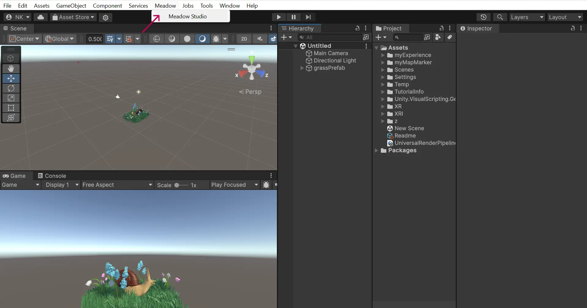
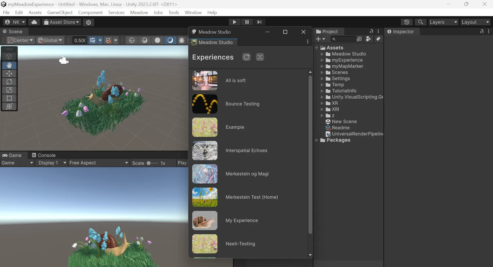
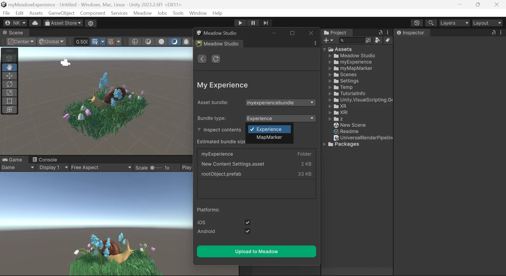

Meadow Studio
Meadow Studio is a plugin for Unity that enables you to:
🌱 Build and upload experiences straight to Meadow
🌻 Automatically set your project settings for Meadow compatiblity
🌷 Add optional packages for creating complex experiences
To create a new project however, you must used the webapp: Meadow Space
Download Meadow Studio
Go to: Download Meadow Studio (https://app.meadow.space/dashboard/meadow-studio)
Click Download. Once downloaded, drag and drop the package into your project window.
Login
Find the Meadow tab in Unity and open the Meadow Studio window. 
Here you can log in to Meadow Studio with the details you used when first making your Meadow account. This will ensure all your projects are synced and up to date.

After logging in, you will see all your experiences listed. Click refresh if something is not up to date.
Upload to Meadow
- Open the experience you would like to upload to.
- In the drop down
Asset Bundle, select the bundle you would like to upload. This is the bundle that you assigned to your project folder. See instructions here. - Specify if this is the Experience Bundle or the Map Marker Bundle. See Map Marker instructions here.
- Select the platforms for which you would like to upload the experience.
- Click Upload to Meadow.
- The process takes a while the first time it’s done as Unity has some caching to do. Subsequent uploads will be faster.

If you have more updates to publish later on, simply repeat this process to update again.
ATTENTION: Make sure to choose the correct bundle and bundle type.
Models: Snail by Rafael Rodrigues, Grass by MauroGonzalezA, Flowers by Vish4More